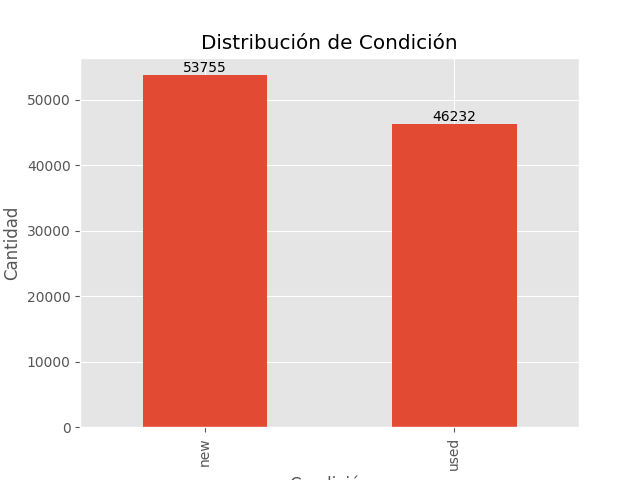

Exploración de Datos (EDA)
Realizar un análisis exploratorio se usa con el objetivo de lograr un entendimiento más amplio del conjunto de datos, y al final se afianzarán los conocimientos detrás de la lógica del negocio; y visto de un punto de vista más técnico ayudará también en la limpieza y la construcción del modelo. Para el siguiente análisis exploratorio se tuvieron en cuenta las siguientes variables:
- Condition (Variable objetivo):, indica si el producto es nuevo o usado)
- Price: precio del producto
- Listing_type_id: Tipo de publicación para los artículos; toma los valores de free, silver, bronce, gold, gold_special, gold_premium y gold_pro
- Automatic_relist: Reventa automática, toma los valores de 0 y 1
- Status: Estado de la publicación, toma los valores: active, paused y closed
- Available_quantity: Cantidad disponible
- Initial_quantity: cantidad inicial
- Sold_quantity: cantidad vendida
- Count_seller_id: cantidad de articulos vendidos por cada seller_id
Análisis descriptivo
Variable objetivo
Para entender la distribucion de productos nuevos y usados se tiene que el 53% (53.755) de los productos son nuevos.

General
Realizar un análisis descriptivo es lo inicial que se recomendaría realizar para entender a primera vista la districión de las variables númericas.
Para este análisis usar el método descriptivas() de la clase EDA; que se encuentra en el modulo eda.py
instanciaEDA.descriptivas()
| price | initial_quantity | sold_quantity | available_quantity | |
|---|---|---|---|---|
| count | 99987.0 | 99987.000000 | 99987.000000 | 99987.000000 |
| mean | 5094.341 | 34.997610 | 2.397302 | 34.746587 |
| std | 46069.000 | 419.922783 | 42.687843 | 419.654162 |
| min | 0.84 | 1.000000 | 0.000000 | 1.000000 |
| 25% | 90.0 | 1.000000 | 0.000000 | 1.000000 |
| 50% | 250.0 | 1.000000 | 0.000000 | 1.000000 |
| 75% | 800.0 | 2.000000 | 0.000000 | 2.000000 |
| max | 3956000.0 | 9999.000000 | 8676.000000 | 9999.000000 |
Agrupado
Debido a que nuestra variable objetivo es codición debemos de realizar un análisis con respecto a esta variable:
Precio
| condition | price Q1 | price Mediana | price Promedio | price Desviación | price Q3 |
|---|---|---|---|---|---|
| new | 140.0 | 350.0 | 3229.513445 | 38653.606948 | 999.0 |
| used | 65.0 | 150.0 | 7262.617919 | 53330.463953 | 550.0 |
Se evidencia en general que el precio de los productos usados es mas bajo que el de los productos nuevos; aunque la media en los usados es mucho mas alta (7.262) esto es gracias a la alta dispersión de los datos; y para estos casos es mejor interpretar la mediana.
El 50% de los productos usados tiene un costo de hasta 150, mientras que en los productos nuevos el 50% es hasta de 140.
Cantidad Inicial
| condition | initial_quantity Q1 | initial_quantity Mediana | initial_quantity Promedio | initial_quantity Desviación | initial_quantity Q3 |
|---|---|---|---|---|---|
| new | 1.0 | 2.0 | 63.555632 | 570.486538 | 10.0 |
| used | 1.0 | 1.0 | 1.792546 | 30.043514 | 1.0 |
El 50% de los productos nuevos se inician con hasta 2 productos, y en promedio la cantidad de productos con los que se inicia es 63.5.
El 50% de los productos usados se inician con hasta 1 producto, y en promedio la cantidad de productos con los que se inicia es 1.7.